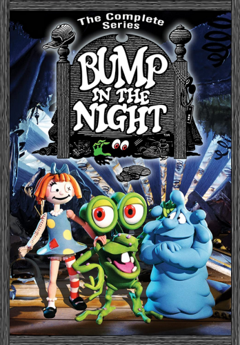

|  |
Bump in the NightМультсериал про самого весёлого парня на свете - мистера Бампа. Это зеленое смешное существо, любимой пищей которого являются носки, которые он поглощает с невероятной энергией. Мистер Бамп постоянно проказничает под кроватками маленьких детей, которые не слушают своих родителей. У него есть двое лучших друзей, с которыми он вечно придумывает разные озорные штучки. Это Флюк, липкая тянучая синяя клякса, которая обитает в домашнем водопроводе и Маша - спокойная рассудительная шерстяная кукла из серии мягких игрушек, которые дети шьют вместе с мамой. Приключения этих трех персонажей предлагаются Вашему вниманию. Не смотря на свою давнюю дату выхода в свет является актуальным и в наше время, благодаря своим оригинальным шуткам. Его оценит по заслугам как ребёнок так и тот, кто был ребёнком на момент выхода на ТВ этого шоу. Английское название: Bump in the Night Русское название: Мистер Бамп, Ночная жизнь Мистера Бампа Год выпуска: 1994 Страна: США Жанр: комедия, приключения Продолжительность: ТВ (26 эп.), ~ 23 минуты Перевод: Профессиональный (Полное Дублирование) Студия "Селена Интернешнл" по заказу "ТВ3" Режиссёр: Кен Понтек / Ken Pontac, Дэвид Блайман / David Bleiman Поучительный мультфильм для маленьких зрителей. И пусть главные персонажи в нем выглядят не совсем эстетично, они все равно вызывают умиление. И даже обладая немного отвратительной внешностью, герои кажутся очень забавными и милыми. Мистер Бамп — огромное существо с зелеными глазами, готовый поглотить своей необъятной пастью всё, что встретится ему на пути. Но больше всего он предпочитает носки. Живя под кроватью одного из детей, заросший грязью и пылью, Бамп собирает разбросанные носки по всей комнате, чтобы потом с наслаждением потрапезничать ими. И ему абсолютно все равно, в каком состоянии они находятся. Он в любом случае не оставит от них ни одной ниточки. У Бампа есть друг — очень смешной пухлячок, похожий на пудинг. Если Бамп выбрал себе очень необычное место для проживания, то Скишенгтон перещеголял его в этом, поселившись в грязном смычном бачке. Такой необычный антураж был придуман авторами намерено. С помощью мультфильма они хотят привить детям любовь к порядку и чистоте. Ведь если они будут постоянно устраивать дома беспорядок, то уже вскоре среди грязи и пыли могут поселиться самые разнообразные чудовища. И в отличие от героев мультфильма, они уже вряд ли будут столь дружелюбными и милыми. |
| Сезон 1 | Серия 1 | Сделано в Японии / Доктор Маша - профессор медицины |
| Сезон 1 | Серия 2 | Фанат жвачки / Малышка улитка |
| Сезон 1 | Серия 3 | Прятки от страха / Беспорядок в доме |
| Сезон 1 | Серия 4 | Не из этой детской комнаты / Монстр из шкафа |
| Сезон 1 | Серия 5 | Осторожно, взрывоопасный Флюк! / Без лица |
| Сезон 1 | Серия 6 | Давай сюда носок! / Успокой то, что не спокойно |
| Сезон 1 | Серия 7 | В тюрьме с пелёнок / Ночь ожившего хлеба |
| Сезон 1 | Серия 8 | Все на вечеринку |
| Сезон 1 | Серия 9 | Чихнуть вовремя / Фокус-покус |
| Сезон 1 | Серия 10 | Приключения в Микробии / Ни звука |
| Сезон 1 | Серия 11 | Плата за мысли / Скажи обеиими руками: "До свидания!" |
| Сезон 1 | Серия 12 | Исполнитель желаний / Домашнее задание |
| Сезон 1 | Серия 13 | Перчатка, что ещё нужно? / Флюки принц |
| Сезон 2 | Серия 1 | Долгий, долгий день / Другая сторона Разрушителя |
| Сезон 2 | Серия 2 | Запах любви / Любовные узы |
| Сезон 2 | Серия 3 | Звёздная песня / Путешествие в центр двоякодышащей рыбы |
| Сезон 2 | Серия 4 | Тётушка Матта / Неуловимый Бампи |
| Сезон 2 | Серия 5 | Он пришёл из шкафа / Всё что нужно - это перчатка |
| Сезон 2 | Серия 6 | Не из этой детской комнаты / Комфорт-шмамфорт |
| Сезон 2 | Серия 7 | Бамп и Рок'н'Ролл / Ночь ожившего хлеба |
| Сезон 2 | Серия 8 | Моя нужда / Красавица и Бамп |
| Сезон 2 | Серия 9 | Звуки музыки / Без лица |
| Сезон 2 | Серия 10 | Чистый и опрятный / Зуб, зуб и ничего кроме зуба |
| Сезон 2 | Серия 11 | Путь к воде / Мороженная индейка |
| Сезон 2 | Серия 12 | Сделано в Японии / Сделано в Японии II |
| Сезон 2 | Серия 13 | Но одной ноге не устоишь / Прятки от страха |